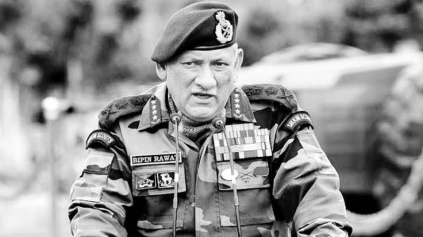

CDS General Bipin Rawat
The first Cheif of Defence Staff

General Bipin Rawat (16 March 1958 – 8 December 2021) was an Indian military officer who was a four-star general of the Indian Army.[4] He served as the first Chief of Defence Staff (CDS) of the Indian Armed Forces from January 2020 until his death in a helicopter crash in December 2021.
Here is the brief detail about General:
- 1958- Born in Pauri, Uttrakhand
- 1978- On 16 December 1978, CDS Bipin Rawat was commissioned into the 5th battalion of the 11 Gorkha Rifles.
- 1980- Became the Lieutenant
- 1984 - Became the Captain
- 1989 - He became the Major in 1989
- 1998 - Was given the post of Lieutenant Colonel
- 2003 - Became the Colonel
- 2007 - Brigadier , in 2007
- 2011 - Major General in 2011
- 2014 - Lieutenant General
- 2017 - General (COAS)
- 2019 - And finally in 2019, he became the first General (CDS)